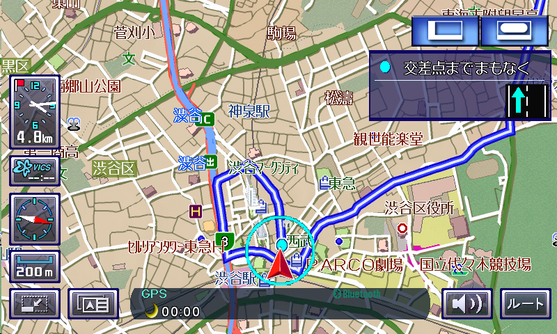
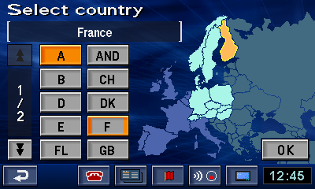
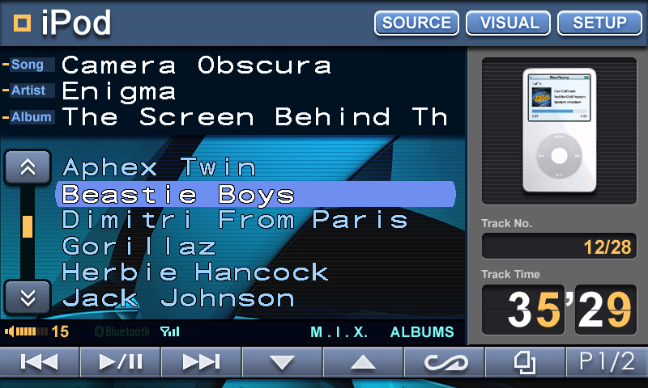
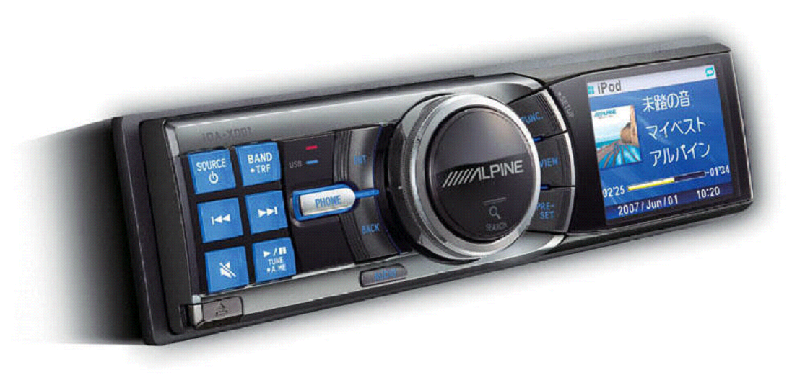
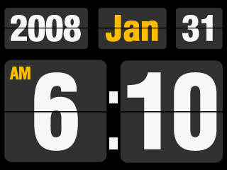
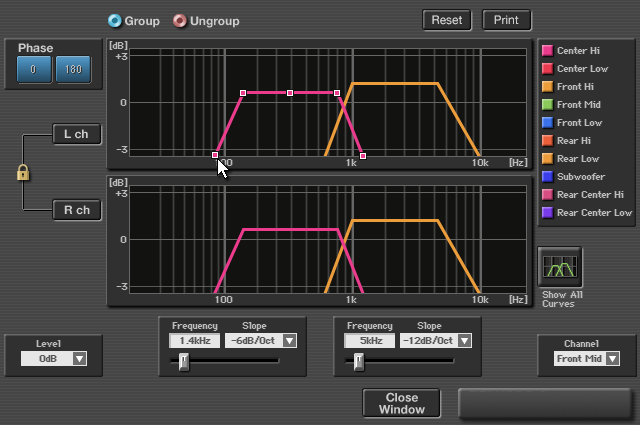

Selected Work — 08
車載 UI/UX
デザイン
カーナビゲーションシステムのUI設計から、iPod連携インターフェースの開発まで。「運転しながら使う」という制約の中で、ユーザーが自然に操作できる画面を作った。
Context
「走りながら使う」UIの難しさ。
カーナビのUIは、スマートフォンが出る前から「複雑な情報を、限られた注意力で扱う」画面を作っていた分野だった。ドライバーは運転に集中しながら、目的地の設定、音楽の操作、通話の切り替えを行う必要がある。
運転中は押し間違えられない。その中で、迷わず使える画面をどう作るか。UIデザイナーの仕事は、ここから始まった。


Design Approach
画面は小さく、タッチは粗く、目は前を見ている。
カーナビUIには明確な制約がある。画面は小さく、タッチ精度は低く、ユーザーの注意は常に分散している。この制約を設計の出発点にして、運転中に必要な情報だけを出す画面にした。
海外向けのモデルでは、日本語・英語・ヨーロッパの各言語に対応した。言葉が変わっても同じ手順で操作できるように、画面の組み立てを考えた。情報設計の基本は、ここで覚えた。
運転中の操作 / 視線の分散 / 小型画面 / タッチ精度 / 多言語対応
1タップで完結 / 階層を浅く / 重要情報を大きく / 色で状態を伝える
iPod Integration
iPodの曲をカーナビの画面で選ぶ。
2006年、Apple iPodとの連携機能の開発プロジェクトを担当した。iPodのライブラリを、カーナビの画面から操作する。迷わず使えるようにするには、AppleのUIとアルパインのUIをどうつなぐかを決める必要があった。
iPodで覚えた使い方を、車の画面でもそのまま使えるようにした。メニューの階層、アイコン、文字の大きさまで合わせている。


Clock Widget
画面いっぱいに時計を出す。
初めてのフルカラー液晶だった。ただし表示は1秒に3枚しか更新できず、メモリも少ない。当時のカーオーディオは、画面の中でイルカが泳いだり車が走ったりする派手な動画を流すのが流行っていたが、この制約ではそういう演出はできない。この制約の中で、何ができるか。
普段車を運転しているときのことを考えると、いつも時間を気にしていた。何時に目的地に着くか、今は何時か。車に時計が無かったり、カーオーディオやナビの時計は小さかったりして、見たいときにちゃんと見るのが難しい。それを何度も体験していた。
そこで考えたのが、昔家にあったパタパタ時計の動きを画面上で再現することだった。滅多に画面が切り替わらないし、数字の組み合わせなのでメモリも節約できる。1秒に3枚の動きで、「分」が変わる瞬間、「時」が変わる瞬間を、パタパタと十分に表現できた。画面いっぱいの時計があれば、いつでも時間を確認できる。
結果としてMac OS Xのダッシュボードウィジェットを想起させるビジュアルになり、「カーオーディオの画面がこんなにカッコよくなるのか」とユーザーの間で話題となって、人気機能のひとつになった。
制約があっても、いつも困っていたことには答えられる。UIデザインを面白いと思った仕事のひとつ。
1秒に3枚の更新。少ないメモリ。イルカも車も動かせない。
運転中いつも時間を気にしているのに、時計が小さくて見たいときに見えない。

「1秒に3枚しか描けない画面だったから、画面いっぱいの時計にたどり着いた。」
Audio UI
音の調整も画面でできるようにする。
ナビのほかに、高音質オーディオのUIも作った。イコライザー、クロスオーバー、マルチチャンネルの音場補正。音響の専門家が使う細かい設定を、普通のドライバーが触って調整できる画面にした。

What I Learned
使う場面から画面を考える。
-
01
操作を何回に分けるかを決める 「目的地を設定する」を何回の操作に分けるかで、使いやすさが変わる。ここで覚えた情報設計は、その後の業務システムの設計でも使っている。
-
02
言葉が違っても通じる画面 言語が変わってもアイコンの意味は通じるか。色の受け取り方は国で違うか。海外向けのモデルを作りながら、どこでも通じる画面の要素を探した。
-
03
考え方の違う2つのUIをつなぐ iPod連携では、AppleとアルパインのUIのどこをつなぐかを決めた。
Connected Projects